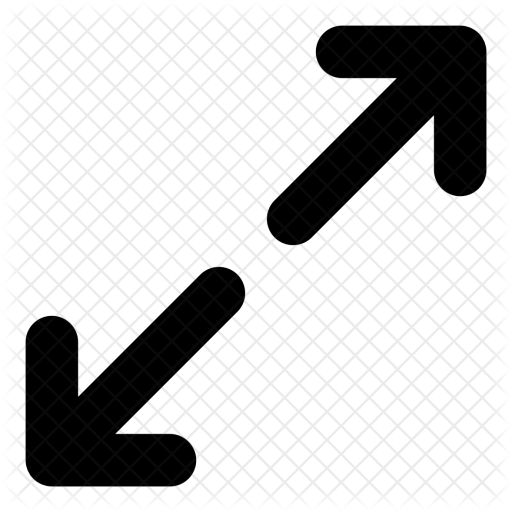

| CATEGORY | QUESTION | STATUS |
|---|---|---|
| Delivery | Was the move completed on time? | COMPLETE |
| Overall Satisfaction | Are you happy at your new place? | COMPLETE |
| Overall Satisfaction | Are you satisfied with the move? | INCOMPLETE |
| Quality | Was the mover professional? | INCOMPLETE |
| Quality | Was the mover professional? | INCOMPLETE |
| Quality | Was the mover professional? | INCOMPLETE |
| Quality | Was the mover professional? | INCOMPLETE |
| Quality | Was the mover professional? | INCOMPLETE |